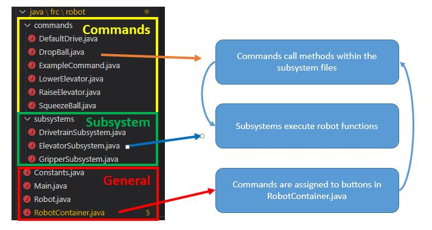

Overview
Our team uses a CommandBase Code structure.
Subsystems create objects required to control the robot.
Inside the subsystems, methods execute specific tasks.
Commands are made to then run the method.
Understanding the code structure is the key to success
Code Structure

- General Files
Constants.java- Contains specific robot values (example: wheel diameters, calibration values, etcc)Main.java- All java programs start from main. This main file starts Robot.javaRobot.javaRobotContainer.java- Creates robots subsystems
- Assign commands to controller buttons
- Command files - Requests action from
subsystem files - Subsystem files - Contain all possible actions of the
subsystem
Program Flow

Example Program flow
The command DropBall is assigned to controller button A on controller 1.
When pressed, it will run the command DropBall located in Dropball.java.
The command DropBall, represented by DropBall.java calls a method from subsystem GripperSubsystem, which was initalized and named m_GripperSubsystem in the RobotContainer.java

The method GripperClose() in the subsystem GripperSubsystem contains the code that controls the solenoid, causing it to actuate.